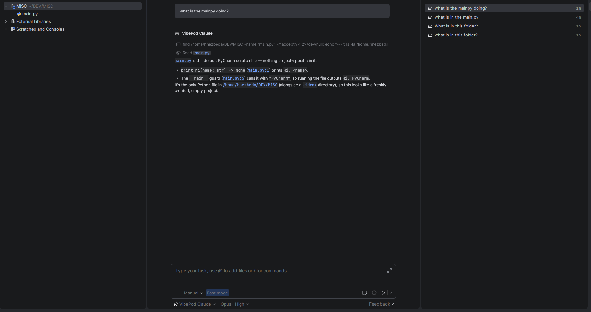
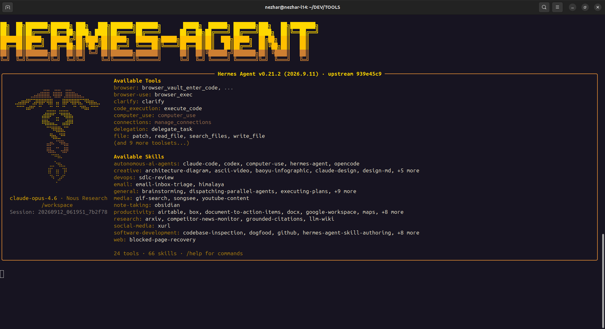

The agent moves into the AI panel
Until now a VibePod agent lived in a terminal. With
vp run <agent> --acp, VibePod acts as an
Agent Client Protocol
adapter instead: the editor launches vp as a subprocess, speaks
JSON-RPC to it, and renders the agent in its own AI panel. Nothing about the run
changes — container isolation, credential profiles, project overlays, the MITM
proxy and local metric collection all stay active.

vp run claude --acp.Register vp as a custom agent server once. Zed
(settings.json):
{
"agent_servers": {
"VibePod Claude": {
"type": "custom",
"command": "/absolute/path/to/vp",
"args": ["run", "claude", "--acp"],
"env": {}
}
}
}Use an absolute path — GUI applications do not inherit your shell
PATH. -w is usually unnecessary: Zed, PyCharm and the
VS Code ACP Client start the agent in the open project, and vp run
takes its working directory as the workspace, so one entry serves every project.
Allow the directory once beforehand, because the editor's stdin is a protocol
pipe rather than a TTY:
vp config allow-dir /absolute/path/to/projectQuestions VibePod would normally ask on the terminal are sent as ACP forms and answered in the chat instead of failing the launch.
Eleven agents, two kinds of adapter
opencode, copilot, auggie,
jcode, gemini, qwen,
devstral and hermes run an adapter that is already in
the image, so they start offline and immediately. claude,
codex and pi fetch theirs with npx, which
needs the package registry reachable through the proxy filter and adds startup
latency. For the claude and codex adapters VibePod points
CLAUDE_CODE_EXECUTABLE and CODEX_PATH at the image's
own binary, so the version the image pins is the one that runs. Any other agent
can be wired up through agents.<agent>.acp_command, which is
also how you pin an npx adapter to a version.
Hermes joins as a developer preview
Hermes is Nous Research's self-improving agent: it keeps cross-session memory
and writes its own skills, and it is not primarily a coding TUI. It runs as
hermes (vp h) from
vibepod/hermes:latest, which is built on the official
nousresearch/hermes-agent image and pins one of its CalVer release
tags.

vp run hermes # classic Python REPL
vp run hermes -- --tui # the Ink TUI
vp task create hermes "summarize this repository"Three things are worth knowing before the first run. Hermes has no usable
provider until you run hermes setup once inside the container; it
persists to the mounted config directory. Global LLM wiring is not supported, so
set llm.enabled: false — VibePod rejects the launch rather than
silently starting a different model. And the pinned image needs its own runtime
user, so rootless Podman is rejected up front instead of crashing mid-boot; run
Hermes on rootful Docker or Podman.
Its write sandbox is honored rather than worked around: VibePod sets
HERMES_WRITE_SAFE_ROOT to /opt/data:/workspace so the
project mount is writable, appends the host workspace path under
--acp, and extends whatever value you configure instead of replacing
it. Skills installed with vp skills are mounted and picked up
automatically, and hermes-acp means Hermes works in an ACP editor
like the rest.
Upgrading
Nothing to migrate by hand.
python -m pip install --upgrade vibepodRelease details
- New
--acpmode:vp run <agent> --acpexposes a containerized agent to any ACP editor, with isolation, profiles, overlays and proxy metrics intact. - ACP support for eleven agents —
claude,gemini,qwen,codex,opencode,copilot,auggie,jcode,devstral,hermesandpi— plusagents.<agent>.acp_commandfor your own adapter. - VibePod's own questions are rendered as ACP forms in the editor when stdin is a protocol pipe.
- ACP fixes: exit codes, init-command override, attach cleanup, stdout hygiene, and Windows support scoped to WSL2.
- New agent
hermes(vp h,vibepod/hermes:latest) in developer preview: resume and continue detection, shared skills mount,/opt/datastate volume,HERMES_WRITE_SAFE_ROOTwrite sandbox, and thehermes-acpadapter. - Hermes guards: enabled global LLM wiring and rootless Podman are rejected before a container starts, for interactive, task and ACP launches alike.
- A running proxy is now replaced when a newer proxy image is pulled.
- Herdr reporting skips the socket mount on VM-backed Podman engines (#170) and is guarded where Python lacks
AF_UNIX. - Editor integration documented with PyCharm screenshots; the Hermes agent documented with a screenshot.